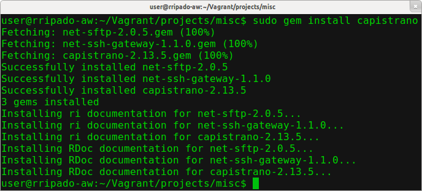
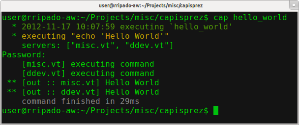
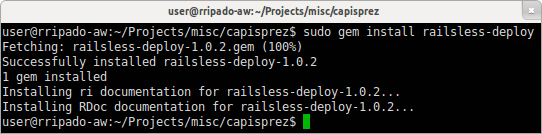
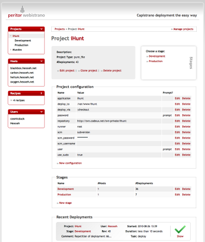

Capistrano
Un outil pour déploier vos applications PHP
Rodolfo Ripado
- Développeur PHP depuis 6 ans
- Membre actif de la communauté Drupal
- Son dada : l'Industrialisation/DevOps/Automation
- Consultant Drupal chez Alter Way
Qu'est-ce que Capistrano ?
- Moteur d'exécution de tâches à distance
- Connections via SSH
- Execution en parallèle
- (S')écrit en ruby
- Open-source (GitHub)
et bien documenté (Capistranorb.com)
Mais ... à quoi ça sert, en gros ?
Installer Capistrano : dépendances
- Sur la machine locale :
- Ruby (incl. rubygems)
- Client SSH
- Sur les machines cible :
- Server SSH (compatible OpenSSH)
- Environnement Linux-like
Installer Capistrano : sur Ubuntu

Les concepts de base
- Capfile
- Fichier de configuration avec la définition des tâches et leurs variables de configuration. Appelé aussi la "recipe".
- Tâches
- Un groupe d'actions.
- Actions
- Opérations à effectuer sur un ensemble de serveurs.
- Rôles
- Un groupe de serveurs.
- Variables
- Définissent les paramètres de connexion, les accès VCS, etc.
L'exemple habituel : Hello World!
set :user, "vagrant"
desc "My remote hello world task."
task :hello_world, :hosts => ["misc.vt", "ddev.vt"] do
run "echo 'Hello World'"
end
Les variables
Pour manipuler des variables :
set(), unset(), exists(), ...
# This is ruby, so this :
set :user, "vagrant"
# is the same as this :
set(:password, "vagrant")Quelques unes des variables disponibles
# SSH connection parameters
set :user, "vagrant"
set :password, "vagrant"
set :ssh_options, {
'port': 8881,
}
set :default_environment, {
'ENVVAR' => 'somevalue',
}
# Set a gateway thought which to tunnel the connections
set :gateway, "www.mygateway.org"Les roles et les servers
role(name, *servers, attributes={}, &block)server(host, *roles, attributes={})
set :user, "vagrant"
#Set 2 roles : web and db servers
role :web, "server1.com", "server2.com"
role :web, "server3.com", :master => true
role :db, "server4.com", "server5.com"
#Add a server to both roles
server "server6.com", :db, :web
desc "My remote hello world task on the master web server only."
task :hello_world, :roles => :web, :only => {:master => true} do
run "echo 'Hello World'"
endLes actions : exécution de commandes
run(cmd, options={}, &block)- Execute cmd en parallèle sur un ensemble de serveurs
run "someCommand someParam", :roles => :web run "someCommand someParam", :once => true - L'alternative
run_locallypermet d'exécuter une commande localement
- Execute cmd en parallèle sur un ensemble de serveurs
sudo(options={})- Retourne une string pour composer des commandes sudo
run "#{sudo :as => 'manuel'} someCommand someParam"
- Retourne une string pour composer des commandes sudo
Les actions : transfert de données
-
put(data, path, options={})put "file contents", "/etc/someapp/config", :roles => :web -
get(from, to, options={}, &block)get "/etc/someapp/config", "downloads/someapp_config" -
upload(from, to, options={}, &block)upload "data/someDir", "/var", :recursive => true -
download(from, to, options={}, &block)download "/var/someDir", "/data/someDir/$CAPISTRANO:HOST$"
Les tâches
-
task(name, options={}, &block)desc "Saying hello is easy." task :hello_world, :roles => :web do run "#{sudo} service apache2 stop" run "#{sudo} service apache2 start" end before(task_name, *tasks, &block)-
after(task_name, *tasks, &block)after :hello_world, :myNameIs after :hello_world do run "echo 'Goodbye all.'" end
Les namespaces
-
namespace(name, &block)
# Namespaces allow you to group your tasks
namespace :deploy do
task :hello_world, :roles => :web do
#some commands
end
end
# You can reopen a namespace anytime. You can
# override previously defined tasks and/or add new ones.
namespace :deploy do
task :my_name_is, :roles => :web do
#some commands
end
endContrôle d'exécution
Que fait-on si une commande échoue ?
transaction(&block)on_rollback(&block)
# Tâche DEPLOY: Exécute toutes les tâches nécessaires pour
# déployer une nouvelle version de l'application
task :deploy do
transaction do
update_code
end
end
# Place une nouvelle version du code dans un nouveau répertoire
task :update_code do
on_rollback do
run "rm -rf #{release_path}"
end
source.checkout(release_path)
endLes composants de nos Recipes :
- Variables de configuration
- Serveurs, rôles, attributs
- Actions
- Transactions, Tâches, Namespaces
Railsless-deploy
Une recipe générique de déploiement :
- Installation via Rubygems :
- 
- Et dans note Capfile :
# Include the alternative deploy recepy
require 'rubygems'
require 'railsless-deploy'
# Custom definitions hereLes tâches par défaut :
user@server:~/cap -T [...] cap deploy # Deploys your project. cap deploy:cleanup # Clean up old releases. cap deploy:pending # Displays the commits since your last deploy. cap deploy:pending:diff # Displays the `diff' since your last deploy. cap deploy:rollback # Rolls back to a previous version and restarts. cap deploy:rollback:code # Rolls back to the previously deployed version. cap deploy:setup # Prepares one or more servers for deployment. cap deploy:symlink # Updates the symlink to the most recently ... cap deploy:update # Copies your project and updates the symlink. cap deploy:update_code # Copies your project to the remote servers. [...]
Comment ça marche ?
- Sur le(s) serveur(s) cible :
-
[deploy_to] [deploy_to]/releases/20080819001122 [deploy_to]/releases/20100819001122 [deploy_to]/releases/... [deploy_to]/shared/... [deploy_to]/current -> [deploy_to]/releases/20100819001122
- Il faudra définir :
- La stratégie de déploiment
- Le système de contrôle de version utilisé
- Et un tas de petites choses ...
Un Capfile simple :
require "rubygems"
require "railsless-deploy"
role :web, "webserver"
set :user, "vagrant"
# Required : used for all sorts of default values
set :application, "MyApplication"
# Requires : The repository from which to checkout the application code
set :repository, "git://github.com/someone/somerepo"
# The VCS identifiers
set :scm, :git
set :scm_user, "me"
# The deployment strategy
# Possible values : copy, checkout, export, remote_cache, ...
set :deploy_via, :remote_cache
set :copy_exclude, "someDir/nonWebData"
# The deployment base directory
set :deploy_to, "/var/www/#{application}"
# How many old releases do we want to keep
set :keep_releases, 3
# Custom tasks
namespace :deploy do
after "deploy:symlink", "deploy:someCustomTask"
desc "My custom task for my super-duper-project"
task :someCustomTask do
run "custom commands here"
end
endL'interface web : Webistrano
- Application RoR, installable via bundler
- Disponible sur GitHub : https://github.com/peritor/webistrano
- Comment faire : Web Application Deployment
Using Webistrano and Capistrano - Utile mais ...
-
- Très spécifique RoR.
- Plus maintenue ?
- De nombreux forks "vivants" existent...
Alternatives à Webistrano
- Strano
- Disponible sur GitHub
- Toujours en Ruby/RoR
- Pour des déploiments à partir de Gitub
- Plus d'infos : http://developwithstyle.com/strano
- Jenkins
- Envisageable si vous l'utilisez déjà pour l'IC de vos projets
Extensions à Capistrano
- Capistrano Multistage
-
- Définition de roles et serveurs par stage
user@server:~/cap production deploy
- Fait désormais partie de Capistrano.
- Capifony
- Installation via Rubygems
- Tâches, variables et répertoires conçus
pour déployer des projets Symfony 1 & 2. - Plus d'informations : http://capifony.org/
Extensions à Capistrano
- Drupal
- Disponible sur GitHub : https://github.com/gaspaio/Drupal-Capistrano-Deploy
- Et autres encore :
Vous n'aimez vraiment pas Ruby ? :-(
- Fabric
from fabric.api import env, run def set_hosts(): env.hosts = ['host1', 'host2'] def mytask(): run('ls /var/www') - Une alternative solide, en Python.
- Sur GitHub : https://github.com/fabric/fabric
- Ploy & WePloy
- Crée par Rasmus Lerdorf pour les besoins de WePay.
- Clone simplifié de Capistrano en PHP.
- Aucun commit fait depuis 2 ans.
- Et autres encore : Control Tier, Func, Mcollective

Merci !
Des questions ?
- Retrouver les slides : http://www.slideshare.net/rodolforipado
- Me suivre : @gaspaio
- Me joindre :